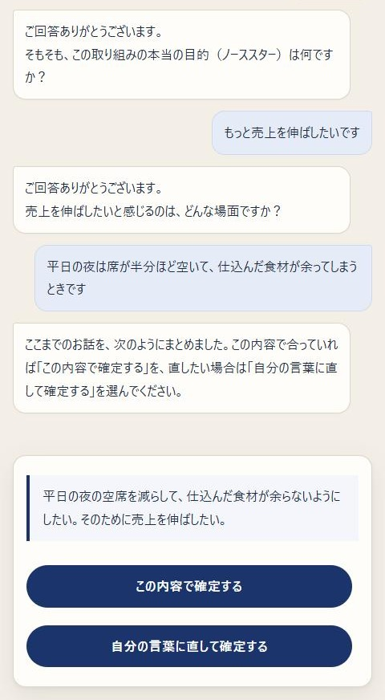

困りごとを聞き取り、何を作るか、何を作らないかを文章にして、合意してから作ります。足りなければ聞き直し、変わったら合意し直します。
自作の「DX導入ヒアリングAI」が、ITに詳しくない方にも分かる言葉で聞きます。一度に聞くのは多くても3つまでです。
社内の資料を探したい、社内向けのAIを使いたいという相談では、質問が増えます。資料の保存場所、古い版の扱い、見せてはいけない資料、個人情報の有無、外部のクラウドに出してよいか、インターネットから切り離す必要があるか、実際の資料をどこまで見せられるか、などです。資料の中身や個人情報は入力しないよう、先にお願いします。
| 仕様のたたき台 | 何を入力するか、どう処理するか、何が出てくるか、誰がどう操作するか、機能どうしのつながり、連携の候補、見た目の参考。 |
|---|---|
| 経緯 | 最初の要望、最後に決めた内容、変わった理由。AIの提案と、それへの反応。 |
| 分析 | 今の業務の流れ、原因の見立て（体感かデータかを添える）、削る・簡単にする・自動にする・人が残る部分。 |
| 残った課題 | 調べること、私が判断すること、次に確認すること。 |
精査を通った案件は、AIが担当ごとの指示書に分けます。指示書には「何を入力し、どう処理し、何を出力するか」まで書き、「今回はいらない」機能は入れません。あわせて「結局この案件は何を解決するのか」を短い文章に書き直し、私が聞き取った内容とずれていないかを確かめます。
引っ越しに伴う手続き25項目を、出す先・期限・必要なもの・出典・確認日つきで一覧にする自分用のWebアプリ。15問に答えると「該当／任意・検討／回答待ち／判定不能／該当しない」に分け、引っ越し日から期限の目安日を出す。自治体ごとの最新ルールの断定、書類の代行、電子申請、手数料の計算はしない。公式の本文を読めていない項目は、隠さずにそう表示する。 自分で使うために作った「引っ越しの手続き」の例（分解時の文章を要約）
| 起動前に確認 | 金額、法律、個人情報、動かす場所、パスワードなどを誰が管理するか。答えが入るまで、実装は起動できません。 |
|---|---|
| 作りながら確認 | 部品の利用条件や動作など、担当のAIが実際に動かして確かめ、結果を記録します。 |
| 後で決める | 仮の扱いを書いて進め、誰が後で決めるかを残します。 |
| 作るもの | 専門用語を避けた説明と、機能の一覧（何を入れると何が出るか）。 |
|---|---|
| 選んでいただくこと | 監査の記録や同時操作への対策などの追加候補を、推薦の理由つきで示し、「含める／含めない」を選んでいただきます。 |
| 答えていただくこと | AIだけでは判断できない点を、質問として載せます。 |
| 目安 | 納期と予算の目安。PDFにまとめて送ります。 |
| 承認の条件 | 進めてよいという返事と、すべての選択と回答がそろうこと。そろうまで実装は始めません。 |
答えにくそうなときは、業種の例を出して言い換えます。送信の直前には、流れが分かれないかと、まだ聞けていない項目を確かめます。同じことを2回聞いて決まらなければ、それ以上は聞かず「未確認」にします。
別のAIが次の8つを確かめます。作るものの入力と出力、今の業務の手順、困りごとの背景、今回必要なものと不要なもの、予算、決める人、規模、使う人の役割。1つでも足りなければ分解に進まず、足りない理由と追加の質問を作って「要追加ヒアリング」にします。私がその質問をお客様に伺い、答えを反映してから精査し直します。推測では埋めません。
自分で使うツールの案件で、精査担当のAIが実際に作った質問です（一部を短くしています）。
| 承認 | 選択と回答を指示書に反映して、実装に進みます。 |
|---|---|
| 変更の希望 | 内容を記録し、指示書を組み直して、改訂番号を上げた確認書を送ります。変更が3回重なったら、私が引き取って整理します。 |
| どちらとも取れる | 承認とはみなしません。質問だけの返信や、答えが抜けた返信も含め、私が読んで確かめます。 |
| 機能の追加が混ざる | 承認の言葉があっても「変更の希望」として扱います。 |
指示書を改訂し、読んで確かめた版そのものを照合して承認し直します。前の承認は消さずに残し、いつ、何の理由で変えたかを記録します。自分で使う「Python学習ツール」では、章を足したり画面の説明を変えたりするたびにこの手順を踏み、改訂番号は11まで進みました。作っている途中でAIでは決められない点が出たときは、私が整理してお客様に確認し、答えを記録してから進めます。
納品したあとは、ヒアリングと同じアプリの「修正依頼」で受け付けます。
仕様の前に「そもそも何を解決したいのか」が決まっていない場合のために、別のヒアリングアプリも作りました（公開前）。システムの話はせず、事業の目的と、事実と仮説の整理を手伝います。
| 浅い版 | 業種と立場の2問のあと、本題10問。1問につき深掘りは1回まで。相談のきっかけを作るためのものです。
|
|---|---|
| 深い版 | 16問。1問につき深掘りは5回まで。招待コードを持つ方だけが使えます。
|
| AIの役割 | 質問の文は固定です。AIは答えを読んで、深掘りする、言い換えて聞き直す、次へ進む、のどれかを選びます。回答の代筆、診断の断定、営業への誘導はさせず、外れた文は決まった聞き返しに差し替えます。 |
| 認識合わせ | やり取りがあった質問は、AIが本人の言葉だけでまとめ直し、本人が「この内容で確定する」か「自分の言葉に直して確定する」を選びます。送るのは、確定した回答です。 |
| 費用の歯止め | 1回のヒアリングで使うAIの利用料に上限を設けています。 |
